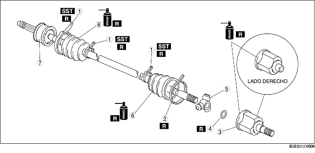

1. Desmontar según el orden indicado en la tabla.
2. Montar en el orden contrario al del desmontaje.

.
|
1
|
Abrazadera guardapolvo (lado rueda, lado cambio con diferencial: diámetro pequeño)
|
|
2
|
Abrazadera del guardapolvo (lado cambio con diferencial: diámetro grande)
[Véase Detalles de desmontaje abrazadera del guardapolvo (lado cambio con diferencial: diámetro grande)].
|
|
3
|
Anillo exterior
(Véase Detalles de montaje anillo exterior).
|
|
4
|
Anillo elástico
|
|
5
|
Junta de trípode
|
|
6
|
Guardapolvo
(Véase Detalles de desmontaje guardapolvo).
(Véase Detalles de montaje guardapolvo).
|
|
7
|
Conjunto eje y junta esférica
|
1. Quitar la abrazadera del guardapolvo utilizando unas pinzas.
1. Apalancar la abrazadera del guardapolvo en los puntos indicados en la figura con unas pinzas y quitar la abrazadera.
1. Poner una referencia de alineación en el semieje y en el anillo exterior.
2. Quitar el anillo exterior.
1. Poner una referencia de alineación en el semieje y en la junta de trípode.
2. Quitar el anillo elástico usando las correspondientes pinzas.
3. Quitar la junta de trípode del eje.
1. Envolver las ranuras del eje con cinta.
2. Quitar el guardapolvo.
1. Llenar con grasa el interior del nuevo guardapolvo (lado rueda).
2. Instalar el guardapolvo con las ranuras del eje siempre envueltas con cinta de vinilo.
3. Quitar la cinta de vinilo.
1. Mientras se alinean las referencias del eje y de la junta de trípode, instalar la junta de trípode con una barra y un martillo.
2. Instalar el nuevo anillo elástico usando las correspondientes pinzas.
1. Llenar el anillo exterior y el guardapolvo (lado cambio con diferencial) con la grasa específica.
2. Montar el anillo exterior.
3. Ajustar el semieje a la longitud estándar.
4. Eliminar completamente el aire presente en el interior de los guardapolvos levantando con el máximo cuidado el extremo pequeño de cada guardapolvo con un destornillador envuelto en un trapo.
5. Comprobar que la longitud del semieje esté conforme a lo especificado bajo presión atmosférica dentro del guardapolvo.
1. Apalancar la abrazadera del guardapolvo en los puntos indicados en la figura con unas pinzas y apretar la abrazadera.
1. Ajustar la amplitud de la apertura A girando el perno de ajuste de la SST.
2. Arrugar completamente la abrazadera pequeña del guardapolvo lado rueda de manera que no hay huecos, con la SST.
3. Comprobar que la abrazadera del guardapolvo no asome de su propria área de instalación.
4. Llenar el guardapolvo con la grasa suministrada con el equipo de reparación.
5. Ajustar la amplitud de la apertura A de la SST según las especificaciones.
6. Arrugar completamente la abrazadera grande del guardapolvo lado rueda de manera que no hay huecos, con la SST.
7. Comprobar que la abrazadera del guardapolvo no asome de su propria área de instalación.